Case study 01 · Brand & packaging
Mau’sCatnip Soda
A cat made of three letters, M, A and U, and a can wrapped in ink and vines. A made-up client, a real job.
See how the cat was drawn ↓- Client
- Mau’s Catnip Soda (fictional)
- Made
- Mark, lockups, can label, tab
- First flavour
- Spooky · blackberry
- Studio
- Berthoud, Colorado
Three letters, one cat.
The brand is called Mau, so the cat is spelled out of it. The M is the head and its ears, the A is the nose, the U is the grin. Nothing was added that the name didn’t already have.
The rules it’s drawn by.
Every line in the mark comes from one module, m, and one stroke, a third of it. Nothing is drawn by eye and left there: it is built, then checked by eye, then rebuilt.
ConstructionGrid ½mKey pointsHead 6m × 7m
- Four weights, no more½ · 1 · 1½ · 3 of one stroke. Every line in the mark is one of those four.
- Tapers at 3 : 1Ears and whiskers run from 1½ strokes down to ½. The same ratio as the moon to the line.
- Points where things meetEar tips, the nose’s top and the inner ends of the ears all finish in a point, never a blunt cut.
- The nose sits on the grinThe nose’s two lobes rest exactly on the grin’s outer circle. Tangent, not nearly.
- The optical passDiagonals read light, so the ears are 6% heavier (1.6 → 0.53). No horn tip ends thinner than ¼ stroke.
Lockups and type.
Two ways to sit the name beside the cat, four colourways, and a simpler mark for when it gets small. The wordmark is Fraunces Black with its soft corners on; the descriptor is Archivo, extra bold and wide.
Soda
The can.
The first flavour is Spooky: blackberry, for the witching hour. One ink on purple. Every form on the label is a filled shape, and the detail is cut out of it, never drawn on top.
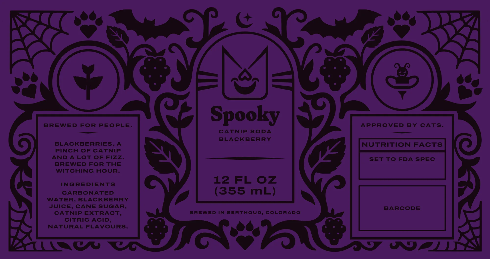
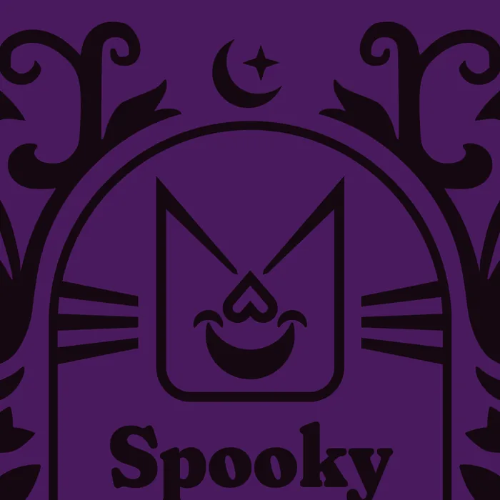
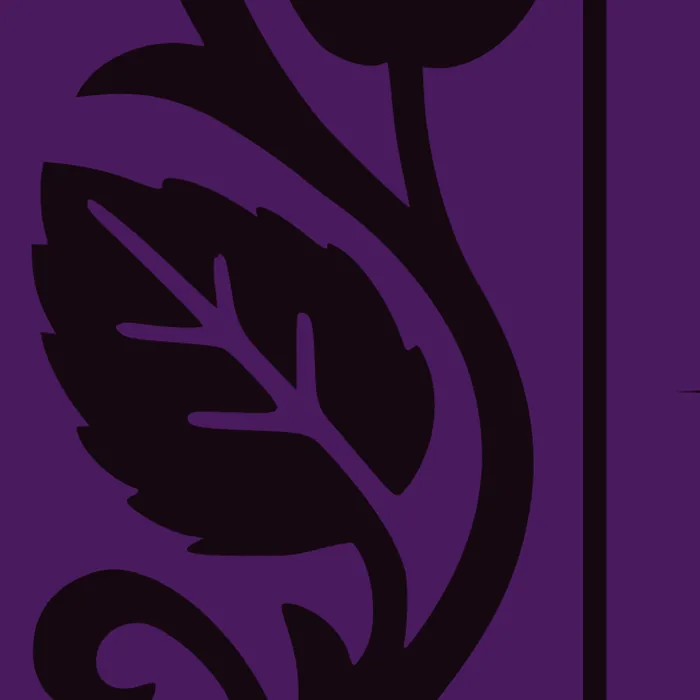
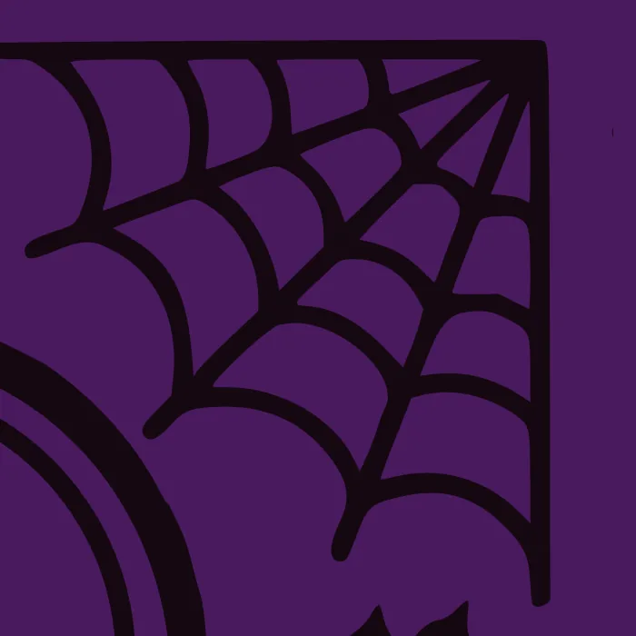
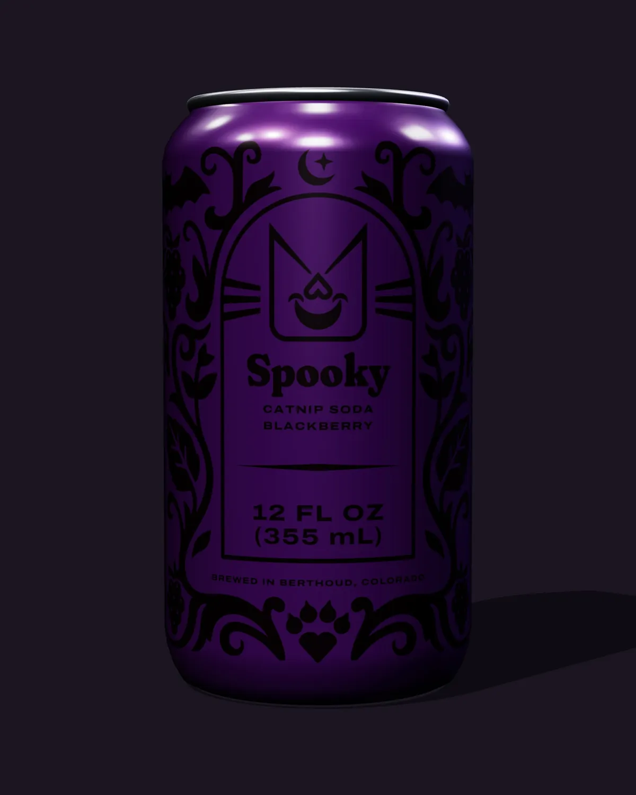
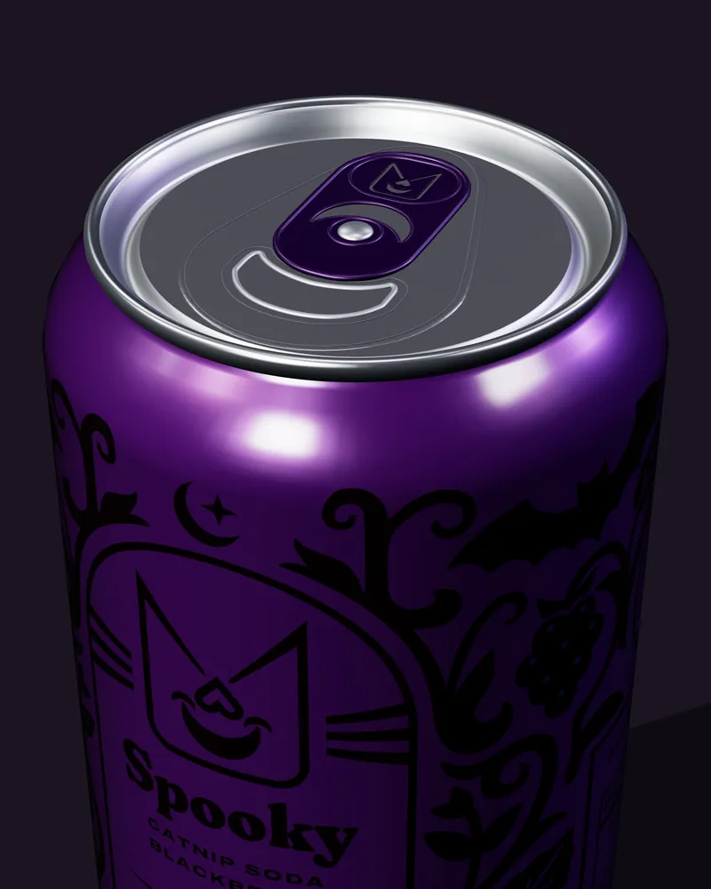
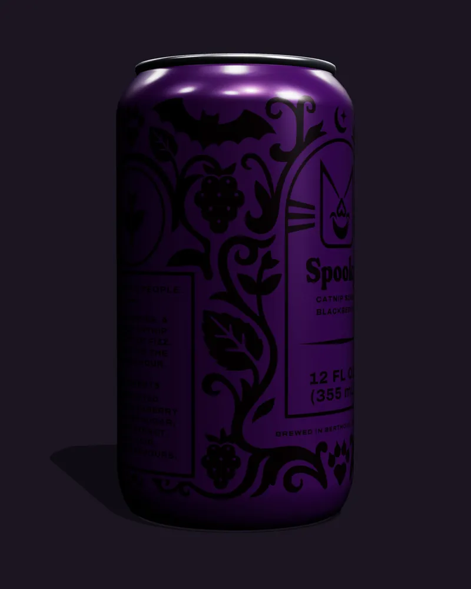
Renders · front, top, side
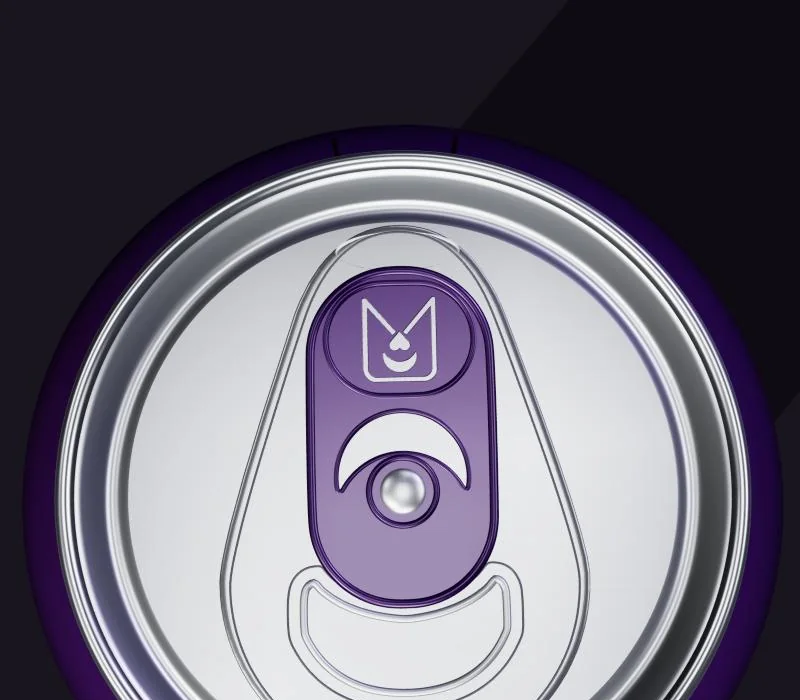
1 2 3Details nobody asked for
The tab.
A stock pull tab would have done. This one is purple and carries the cat.
- 1The mark, cut throughThe small mark is cut right through the finger hole.
- 2A crescent slotThe slot round the rivet is the grin’s moon.
- 3A smile to drink fromThe opening is shaped like the grin, so the can smiles when it’s open.
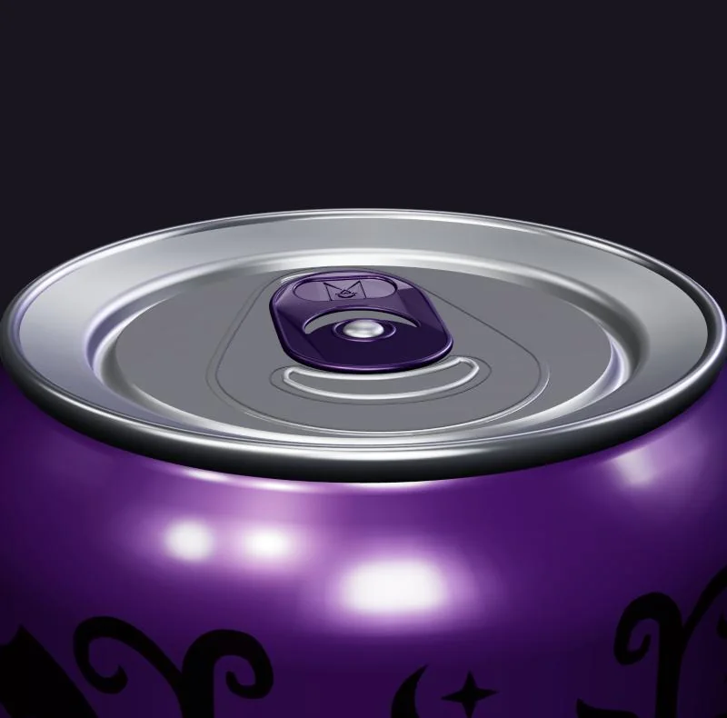
Coming next.
Each flavour gets its own set of shapes built on the same grid, so the cans read as one family. Spicy and Sunny have their icons drawn; their cans are next.
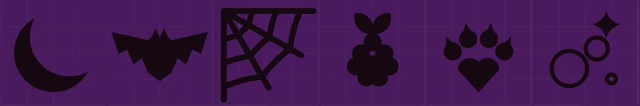
Spooky
Blackberry · moons, bats, webs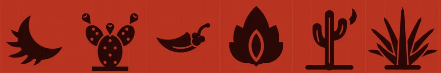
Spicy
Chili · embers, firebirds, flame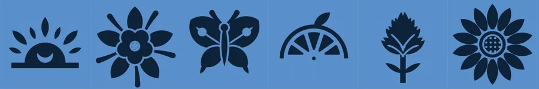
Sunny
Citrus · Colorado wildflowersStart
Start with a short call.
Fifteen or thirty minutes. You leave with a next step and a price range.